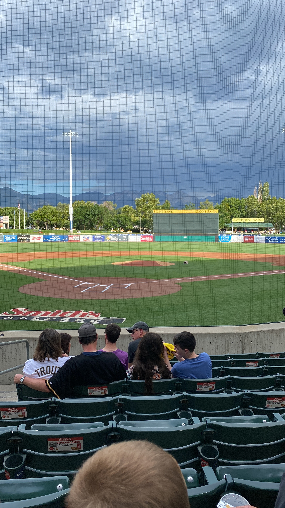

 In August 2022, I attended a Minor League baseball game in Salt Lake City. Since I played baseball for many years and watch a lot of baseball, I feel like I have a pretty good understanding of the strike zone. In the first few innings of the game, I felt like the umpire had a very tight strike zone and was especially not calling high strikes, which I feel had been more commonly called in the majors the last few years. As I discussed what I thought were questionable calls with my friends, someone in the row in front of us reminded us that the automated strike zone was being using in AAA ball.
My friends and I felt a little dumb for complaining about the automated strike zone, but at the same time I couldn’t stop thinking about how I felt like the strike zone seemed small. Since I have been around baseball a lot, I felt that even though the strike zone was automated, it was different from the strike zone that is usually called. I pulled up MiLB Gameday for the game we were at and when I looked at the strike zone, it honestly looked a decent amount different from the MLB strike zone that I pulled up on Gameday for a MLB game. Now, I know that the strike zones are necessary to scale for Gameday, but I was again suspicious about the size of the strike zone.
Later, I began to search for the size of the automated strike zone. From an article published in The Athletic, “The strike zone extends 19 inches wide at the middle point of home plate, including an inch off either edge (home plate is 17 inches wide). The top and bottom edges of the strike zone are based on specific percentages of the batter’s height. The size of the automated zone, MLB said, is similar to the major-league zone.”1
The automated balls and strikes system (ABS) was implemented in Triple A in May 2022.
library(tidyverse)## ── Attaching packages ─────────────────────────────────────── tidyverse 1.3.1 ──## ✔ ggplot2 3.3.6 ✔ purrr 0.3.4
## ✔ tibble 3.1.8 ✔ dplyr 1.0.9
## ✔ tidyr 1.2.0 ✔ stringr 1.4.1
## ✔ readr 2.1.2 ✔ forcats 0.5.1## ── Conflicts ────────────────────────────────────────── tidyverse_conflicts() ──
## ✖ dplyr::filter() masks stats::filter()
## ✖ dplyr::lag() masks stats::lag()pitch_data <- read.csv("milb.csv")
august <- pitch_data %>%
filter(Game != "MiLB: April")
ggplot(august, aes(x = pitchData.coordinates.pX, y = pitchData.coordinates.pZ,
color = details.isStrike)) +
geom_point(alpha = .25) +
facet_wrap(~Game) +
coord_fixed() +
scale_color_manual("Pitch Result",
values = c("darkgoldenrod", "royalblue4"),
labels = c("Ball", "Strike")) +
ylim(-2, 6) +
xlim(-3, 3) +
labs(x = "Horizontal Location", y = "Vertical Location")## Warning: Removed 17767 rows containing missing values (geom_point).